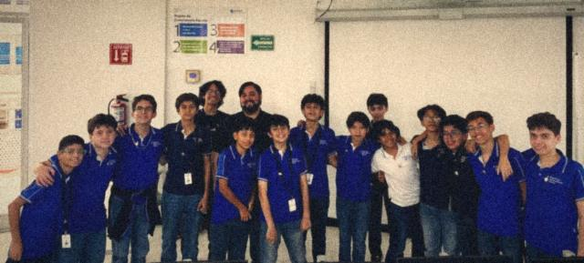
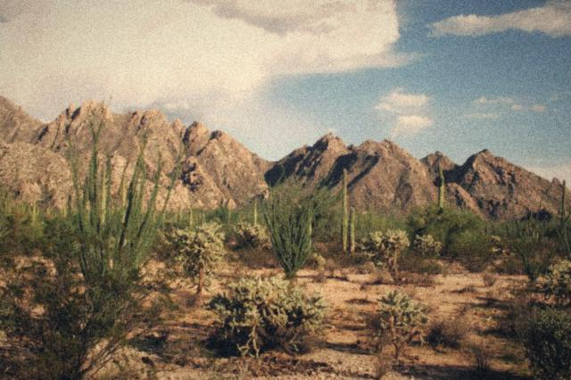

Bienvenidos al laboratorio
CiTIAM Labs es el club de Highpoint School donde las preguntas se convierten en experimentos, diseños y proyectos. Nos inspira lo que tenemos cerca: el sol de Hermosillo, las plantas, el agua, los hongos y las ideas de nuestra comunidad.
Esta página es la entrada a nuestro club. No necesitas saber programar para empezar: puedes mirar los proyectos, leer una guía y probar un juego. Cada página es como una sala diferente del laboratorio.
Si algo te sorprende, anótalo. Si una respuesta no sale a la primera, cambia tu estrategia y vuelve a intentar. En ciencia e ingeniería, los intentos también producen información útil.
VER EL VIDEO Y CONOCER EL PROGRAMAHoy en CiTIAM
¿SABÍAS QUE...?
Tu misión de hoy: abre tu Pasaporte
Tu rango: . El dato cambia cada día, así que vuelve mañana.
VER MI PASAPORTEElige tu siguiente parada
Usa estos botones para entrar directamente a la sección que te interesa. Puedes regresar a esta portada en cualquier momento con el botón Inicio del menú.
Nuestra historia
CiTIAM Labs crece por generaciones. Cada grupo llega con sus propias preguntas, y esta es la historia hasta ahora.
2025: la primera generación
Aquí empezó todo. De esta generación salió el equipo IRVEN, cuyo proyecto nació ese mismo año como EcoTrack y sigue creciendo hasta hoy. Conoce su historia en Casos de éxito.
Septiembre de 2026: arranca la segunda generación

Estudiantes y personas adultas que los acompañan se reunieron para inaugurar la segunda generación del programa. Hacer ciencia también necesita una comunidad: alguien que pregunte contigo, te ayude a mejorar y celebre lo que descubres.
Su primera sesión

Así se veía el grupo en su primer día: todo por preguntar y todo por probar.
¿Y lo que sigue? Se está escribiendo ahora. Mira en qué trabaja el club y piensa qué pregunta traerías tú.
 Caso de éxito: equipo IRVEN
Caso de éxito: equipo IRVEN

Empezaron en la primera generación de CiTIAM Labs y ganaron una mención honorífica en FireCAMP, de FireLab, en 2026. Su proyecto nació en 2025 como EcoTrack y evolucionó. Hoy estudian en PrepaTec y irven.app se incuba en Future Founders Academy, en conjunto con el Instituto de Emprendimiento Eugenio Garza Lagüera.
Son un ejemplo de perseverancia: siguieron trabajando en su idea cuando ya nadie la pedía de tarea.
CONOCER SU HISTORIA¿Qué significa CiTIAM?
CiTIAM reúne cinco maneras de aprender. No son materias aisladas: al resolver un problema real, a menudo necesitamos varias al mismo tiempo.
- Ci — Ciencia
- Observar con atención, hacer preguntas y buscar pruebas.
- T — Tecnología
- Usar herramientas e ideas para resolver una necesidad.
- I — Ingeniería
- Diseñar, construir, probar y mejorar una solución.
- A — Artes
- Imaginar posibilidades y comunicar las ideas con claridad.
- M — Matemáticas
- Medir, comparar cantidades y reconocer patrones.
Imagina que queremos cuidar una planta del patio: la ciencia ayuda a observarla; la tecnología puede medir la luz; la ingeniería diseña una sombra; el arte hace que el diseño sea claro y agradable; las matemáticas ayudan a calcular sus medidas.

Cómo se convierte una pregunta en proyecto
En el club trabajamos en pasos pequeños. Puedes usar este mismo método para una actividad de clase, siempre con materiales seguros y el acompañamiento de tu docente.
- Pregunta: elige algo que puedas observar o medir. Por ejemplo: ¿en qué parte del patio permanece más tiempo la sombra?
- Predice: escribe qué crees que ocurrirá y por qué. A esa explicación inicial se le llama hipótesis.
- Prueba: decide qué observarás, qué materiales necesitas y cómo mantendrás la comparación justa.
- Registra: apunta la fecha, la hora, las medidas y cualquier detalle importante. No inventes datos que no observaste.
- Explica y mejora: compara los resultados con tu predicción, comparte lo que aprendiste y decide qué probarías después.

Un consejo: cambiar una sola cosa a la vez suele ayudar a descubrir qué pudo causar un cambio en el resultado.
Un vistazo al laboratorio
Estas ilustraciones animadas fueron creadas para el sitio con gráficos sencillos inspirados en la informática de los años noventa. Las fotografías de estudiantes son de las actividades del club.


Nuestro patio es el desierto de Sonora

Hermosillo está en el desierto sonorense, un ecosistema que México comparte con Estados Unidos. Mucho sol, poca agua y plantas con formas sorprendentes: es un lugar excelente para hacer preguntas.
¿Por qué un cactus puede guardar agua? ¿Cómo cambia una sombra del invierno al verano? ¿Cuánta energía llega del Sol? No hace falta ir lejos para investigar; a veces basta con salir al patio.

Misión de observación
¿No sabes qué investigar? Pide una idea y úsala como punto de partida. Puedes dibujar lo que observas o apuntarlo en tu cuaderno; no necesitas compartir información personal en internet.
Tu próxima pregunta puede empezar con algo que veas en el patio.
Realiza observaciones en un lugar seguro y con permiso de tu docente.
Preguntas frecuentes para empezar
¿Y si me equivoco?
Revisa tus pasos. Un error puede mostrar qué parte del plan hay que cambiar. Escribe lo que ocurrió de verdad: los resultados inesperados también sirven para aprender.
¿Tengo que saber mucho de computadoras?
No. Puedes empezar leyendo, mirando las fotos o resolviendo un reto. El apartado Programación te enseña HTML, CSS y JavaScript desde cero con ejemplos del propio sitio.
¿Puedo hacer cualquier experimento en casa?
No todos los experimentos son seguros. Consulta siempre con tu docente y una persona adulta antes de reunir materiales o probar una idea. Nunca pruebes cultivos, hongos o sustancias desconocidas.
LEER LA GUÍA DEL SITIOLibro de visitas
En 1998 toda página personal tenía uno. Déjanos una firma con un apodo, nunca con tu nombre completo, teléfono o dirección.
¿Quién puede leerlo? Solo este navegador. Tu firma no viaja a internet ni la verá nadie más. Sirve para probar cómo una página puede recordar datos con localStorage.
Mensaje del laboratorio
Una buena investigación empieza con una pregunta que se pueda observar. Anota lo que crees que ocurrirá, prueba tu idea con cuidado y compara tus resultados.
Sitio educativo de Highpoint School · Hermosillo, Sonora · Edición retro de 1998